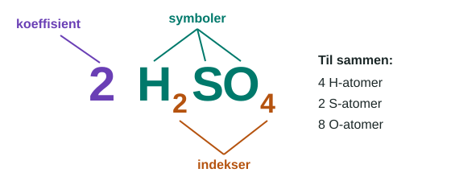
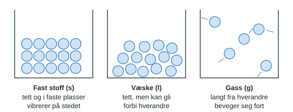
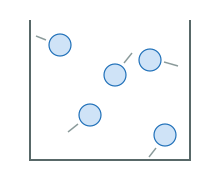

Grunnstoffer, forbindelser og kjemiske formler
Alle kjemikalieflasker og alle sikkerhetsdatablad har en kjemisk formel. Når du kan lese formelen, vet du hvilke atomer stoffet består av og hvor mange det er av hvert slag. Det trenger du når du skal skrive reaksjonsligninger og regne på laben.
Grunnstoff og kjemisk forbindelse
Et molekyl er to eller flere atomer som er bundet sammen med kovalente bindinger, for eksempel H2O og O2. Kovalente bindinger lærer du mer om senere i emnet.
Et grunnstoff består av bare én type atomer. Jern (Fe) og oksygengass (O2) er grunnstoffer. Oksygengass består av molekyler, men begge atomene i molekylet er oksygen. Hydrogen, nitrogen, oksygen, fluor og klor finnes på samme måte som molekyler med to atomer: H2, N2, O2, F2 og Cl2. Det er viktig å huske når du skriver reaksjonsligninger.
En kjemisk forbindelse består av to eller flere grunnstoffer som er bundet sammen. Vann (H2O), karbondioksid (CO2) og natriumklorid (NaCl) er forbindelser. Vann og karbondioksid består av molekyler. Natriumklorid består ikke av molekyler. Hva det består av, lærer du på siden om ioner.
En forbindelse har helt andre egenskaper enn grunnstoffene den er laget av. Natrium er et metall som reagerer voldsomt med vann. Klor er en giftig gass. Sammen danner de natriumklorid, som er vanlig bordsalt.
Grunnstoffer og forbindelser er rene stoffer. En blanding består av flere stoffer som ikke er bundet kjemisk sammen, for eksempel luft, sjøvann og saltløsninger. Blandinger lærer du mer om i emnet «Stoffmengde, konsentrasjon og fortynning».
Den kjemiske formelen
En kjemisk formel viser hvilke atomer et stoff består av, og hvor mange det er av hvert slag. Den har tre deler:
- Symbolene viser hvilke grunnstoffer stoffet består av. De finner du i periodesystemet.
- Indeksen er det lille tallet nede til høyre for et symbol. Den forteller hvor mange atomer det er av grunnstoffet rett foran. Står det ingen indeks, er det 1 atom.
- Koeffisienten er det store tallet foran formelen. Den forteller hvor mange molekyler eller enheter av stoffet det er. Ordet «enheter» brukes om stoffer som ikke består av molekyler, for eksempel natriumklorid.

Legg merke til forskjellen på 2O og O2. 2O er to løse oksygenatomer. O2 er ett molekyl der to oksygenatomer er bundet sammen.
Eksempel
Aluminiumsulfat brukes i vannrenseanlegg. Det får små partikler i vannet til å klumpe seg sammen, slik at de kan fjernes.
Oppgave: Hvor mange atomer av hvert slag er det i Al2(SO4)3?
Løsning:
- Aluminium: indeksen etter Al er 2. Det gir 2 Al-atomer.
- Parentesen (SO4) er en gruppe atomer som hører sammen. Indeksen 3 etter parentesen betyr at gruppen er med 3 ganger.
- Svovel: 1 S i gruppen · 3 = 3 S-atomer.
- Oksygen: 4 O i gruppen · 3 = 12 O-atomer.
Svar: 2 Al, 3 S og 12 O. Det er 17 atomer til sammen.
Aggregattilstand
Aggregattilstanden forteller om et stoff er fast stoff, væske eller gass. Den skrives i parentes etter formelen:
| Skrives | Betyr | Eksempel |
|---|---|---|
| (s) | fast stoff (solid) | NaCl(s), salt i en sekk |
| (l) | væske (liquid) | H2O(l), vann |
| (g) | gass | CO2(g), karbondioksid |
| (aq) | løst i vann (aqueous) | NaCl(aq), saltløsning |

Det samme stoffet kan ha ulik aggregattilstand. Det avhenger av temperatur og trykk. Ved vanlig trykk er vann fast stoff (is) under 0 °C, og det koker ved 100 °C. Vann fordamper også ved lavere temperatur, men bare fra overflaten. I et prosessanlegg brukes damp ofte til oppvarming.
Aggregattilstanden kan bety mye for hvor farlig et stoff er. HCl(g) er hydrogenklorid, en etsende gass. HCl(aq) er hydrogenklorid løst i vann, altså saltsyre.
Formelen forteller ikke hvor farlig et stoff er. Les alltid etiketten og sikkerhetsdatabladet før du bruker et kjemikalie. Konsentrert saltsyre avgir HCl-gass som er etsende for øyne og luftveier. Den skal bare håndteres i avtrekkskap, og du skal bruke vernebriller og hansker.
Stoffer du ofte møter på laben
| Formel | Navn | Kommentar |
|---|---|---|
| NaCl | natriumklorid | vanlig salt |
| NaOH | natriumhydroksid | løst i vann kalles det natronlut |
| HCl | hydrogenklorid | løst i vann kalles det saltsyre |
| H2SO4 | svovelsyre | sterk, etsende syre |
| NH3 | ammoniakk | gass med stikkende lukt. Løst i vann kalles det ammoniakkløsning (salmiakkspiritus). |
| CO2 | karbondioksid | dannes ved forbrenning |
Test deg selv
Hvilken aggregattilstand viser figuren?

- fast stoff (s)
- væske (l)
- gass (g)
I en gass er partiklene langt fra hverandre og beveger seg fort i alle retninger.
Er O2 et grunnstoff eller en kjemisk forbindelse?
- grunnstoff
- kjemisk forbindelse
- blanding
Molekylet består bare av oksygenatomer.
Hva er forskjellen på 2O og O2?
- Det er det samme.
- 2O er to løse atomer, O2 er ett molekyl.
- O2 er to molekyler.
Koeffisienten 2 foran betyr to enheter. Indeksen 2 etter betyr to atomer bundet sammen.
Hvor mange oksygenatomer er det i 3 CO2?
- 3
- 5
- 6
3 molekyler · 2 O = 6 O.
Hvor mange hydrogenatomer er det i Ca(OH)2?
- 1
- 2
- 4
Indeksen 2 etter parentesen gjelder både O og H.
Hva betyr NaCl(aq)?
- fast salt
- salt løst i vann
- smeltet salt
(aq) betyr løst i vann.
Ordliste
| Begrep | Forklaring | Engelsk |
|---|---|---|
| molekyl | To eller flere atomer som er bundet sammen med kovalente bindinger, for eksempel H2O og O2. | |
| kjemisk forbindelse | Stoff som består av atomer fra to eller flere ulike grunnstoffer bundet sammen, for eksempel vann og natriumklorid. | |
| kjemisk formel | Viser hvilke atomer et stoff består av, og hvor mange av hvert slag. | |
| indeks | Lite, senket tall etter et symbol i en formel. Viser hvor mange atomer det er av grunnstoffet foran. | |
| koeffisient | Tall foran en formel. Viser hvor mange molekyler eller enheter av stoffet det er. | |
| aggregattilstand | Om stoffet er fast stoff (s), væske (l) eller gass (g). I formler brukes også (aq), som betyr løst i vann. |
Les mer
- Kjemien stemmer, kapittel 1.
Om kildene: Teksten, eksemplene og figurene på denne siden er laget for dette nettstedet. Siden bygger på undervisningsopplegg i kjemiprosess- og laboratoriefag ved Sauda vgs, som er utarbeidet med utgangspunkt i blant annet Kjemien stemmer, Laboranten og åpne nettkilder.